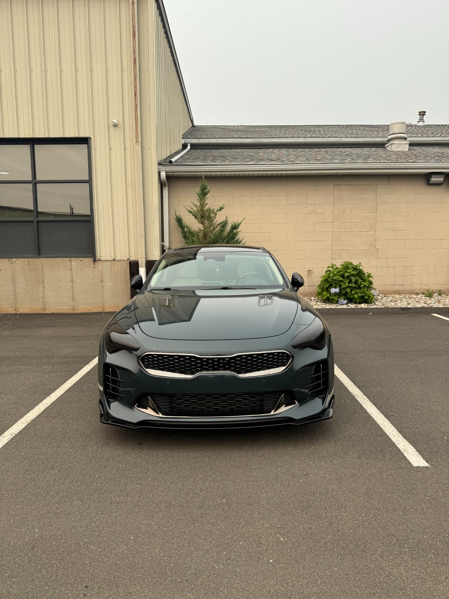

Window Surrounds
The bright band around the glass is the piece most people notice. Blacking it out is the single biggest change in a blackout package.
↗Window surrounds, grille bars, badges, mirror caps and roof rails wrapped in gloss, satin or matte black. A factory-style blackout package for a fraction of a full wrap, and fully reversible.
Chrome trim dates a vehicle faster than almost anything else on it. Blacking it out modernizes the whole car without touching a single painted panel.
Most people who want a different-looking car assume they need a wrap or a repaint. Often they just want the chrome gone. Window surrounds in particular draw the eye, and removing that bright band changes the entire read of the profile.
Because chrome delete only covers trim, it costs a small fraction of a full color-change wrap and takes far less time. For a lot of owners it is the single highest-value modification available.
The work is vinyl, so it is fully reversible. That matters on a lease, where anything permanent is a problem at turn-in, and it matters on any vehicle you might sell to a buyer who wants the factory look back.
Quality is decided at the edges. Trim pieces should be removed where the design allows so film wraps around and behind them rather than being cut flush along an edge. Film trimmed at the edge is what starts lifting at the car wash a few months later.
Take the whole package or pick the pieces that bother you.
The bright band around the glass is the piece most people notice. Blacking it out is the single biggest change in a blackout package.
↗Chrome grille bars, surrounds and lower front trim wrapped to match, which pulls the whole front end together.
↗Model badges and manufacturer emblems blacked out or removed entirely for a cleaner rear end and tailgate.
↗Chrome or body-color mirror caps wrapped in gloss, satin or matte black. Small piece, disproportionate effect.
↗Rails, side moldings and rocker trim on SUVs and wagons, where chrome runs the length of the vehicle.
↗Gloss reads closest to factory black paint. Satin is the most popular middle ground. Matte is the most aggressive. We show samples in daylight first.
↗A full color-change wrap covers every panel and costs accordingly. Chrome delete touches only the trim, which is where most of the dated look actually lives. If you like your car's color and just want it to look current and more aggressive, this is the change to make, and it leaves the option of a full wrap open for later.
We go over which trim pieces you want gone and show gloss, satin and matte samples on the vehicle in daylight.
Trim is cleaned and decontaminated, and pieces are removed where the design allows so edges can be wrapped rather than cut.
Film is laid, heated and formed to each piece, then post-heated so it holds in recesses and around curves.
Everything goes back on, edges and seams are inspected, and we cover washing and care before you leave.
Searching for chrome delete near North Haven, CT? Exclusive Auto Lab blacks out window surrounds, grille bars, badges, mirror caps, roof rails and side trim in gloss, satin or matte finishes on all makes and models.
Chrome delete pairs naturally with window tint and lighting tint. Most owners doing a full blackout handle all three in one visit rather than three separate trips.
Serving North Haven, New Haven, Hamden, Wallingford, Cheshire, Branford, East Haven, West Haven, Meriden and surrounding Connecticut communities.
Far less. Chrome delete covers only trim pieces, not painted panels, so both the material and the labor are a small fraction of a full color-change wrap. Exact pricing depends on how much chrome your vehicle has and which pieces you want done.
No, and that is one of its main advantages. It is vinyl film, so it can be removed and the original trim is underneath unchanged. That makes it safe on a leased vehicle and reversible if you sell to someone who wants the factory look.
Gloss reads closest to factory black paint and hides imperfections best. Satin is the most popular, with a subtle sheen that looks intentional without shouting. Matte is the most aggressive and shows dust and fingerprints most. We show samples on your car in daylight before cutting anything.
Yes. Plenty of people only do window surrounds, or only badges and mirror caps. There is no requirement to take the whole package.
On factory trim in good condition, no. The film adheres to the surface and releases cleanly on removal. Trim that is already pitted, peeling or previously repainted carries more risk, and we check condition before quoting.
Hand wash with pH-neutral soap. Avoid tunnel washes with spinning brushes, which can catch film edges, and avoid aiming a pressure washer directly at seams. We go over specifics at pickup.
Reference images showing the kind of work involved. Follow our Instagram for current jobs coming through the shop.




Call, text photos, or request an appointment online. We will tell you what to expect before you bring the vehicle in.